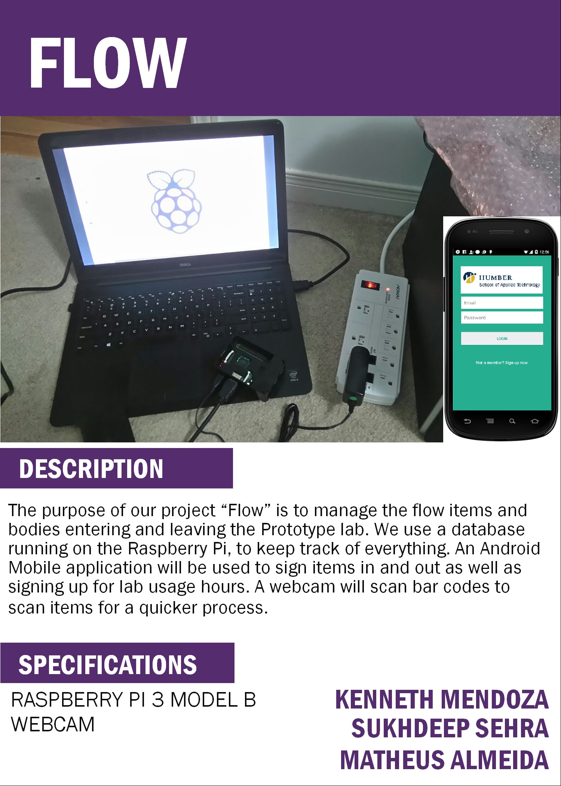

Download the Publisher file here
It’s the sixth week into our project, we’ve purchased a Raspberry Pi, a Raspberry Pi starter kit and a USB webcam. We’ve tested all parts for functionality. However, the biggest challenge was trying to get the webcam to work with the Raspberry Pi. The webcam we bought was designed to be used on Windows and Linux, while Raspberry Pi runs a modified version of Linux operating system. We encountered critical driver issues and had to search for different drivers and workarounds to get the webcam to work with the Raspberry Pi. I’ve added the unboxing, assembly, and power-on video for the Raspberry Pi on my GitHub link. On the software side, we’ve planned out the basic Graphical-User-Interface (GUI) and the application requirements for our project. We also have a basic framework done for the app. So far we’ve invested well over $200 into this project. We have all the parts we need to be able to finish this project. We are currently on-track with our project schedule.